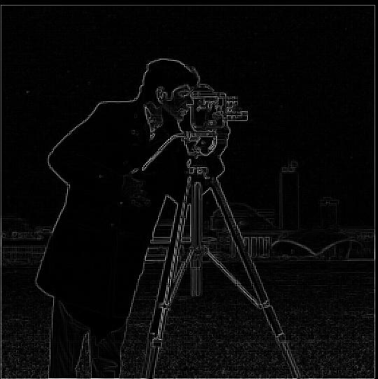

CS 180 Project 2: Fun with Filters and Frequencies!
Exploring Image Filters and Frequency Domain Techniques
Jason Lee
Finite Difference Operator
To start off this project, I used simple difference operators to compute the image gradients along the x and y axes for edge detection.
By applying convolution with D_x = [[1, -1]] and D_y = [[1], [-1]] to the "Cameraman" image, I obtained the partial derivatives I_x and I_y
, which highlight vertical and horizontal edges, respectively. I then combined these gradients to calculate the overall gradient magnitude,
representing the strength of edges. After testing different thresholds, I found that a value of 50 worked best for binarizing the gradient
magnitude, producing a binary edge map that effectively highlights the detected edges in the image.

Original Image

X-gradient

Y-gradient

Magnitude of Gradient

Edge Detected
Derivative of Gaussian (DoG) Filter
The Derivative of Gaussian (DoG) filter is an extension of the Gaussian blur, which smooths the image and computes the derivative. This is useful for detecting edges in the image after reducing noise. Below are three examples of edge detection using the DoG filter.

Image 1: DoG Applied

Image 2: DoG Applied

Image 3: DoG Applied
Image "Sharpening"
Image sharpening enhances the edges and details of an image by amplifying high-frequency components. Here are seven results demonstrating image sharpening.

Sharpening Example 1

Sharpening Example 2

Sharpening Example 3

Sharpening Example 4

Sharpening Example 5

Sharpening Example 6

Sharpening Example 7
Hybrid Images
Hybrid images combine two different images by filtering one for high frequencies and the other for low frequencies, creating an interesting effect where different images are perceived at varying viewing distances. Below are nine examples of hybrid images.

Hybrid Image 1

Hybrid Image 2

Hybrid Image 3

Hybrid Image 4

Hybrid Image 5

Hybrid Image 6

Hybrid Image 7

Hybrid Image 8

Hybrid Image 9
Fourier Analysis
Fourier analysis breaks down an image into its frequency components. This is particularly useful for filtering images in the frequency domain. Below are five examples showcasing the Fourier Transform of different images.

Fourier Example 1

Fourier Example 2

Fourier Example 3

Fourier Example 4

Fourier Example 5
Gaussian and Laplacian Stacks
Gaussian and Laplacian stacks are used to represent an image at different frequency bands. Gaussian stacks progressively blur an image, while Laplacian stacks are derived by subtracting two consecutive levels of the Gaussian stack. Below are four examples.

Gaussian Stack Example 1

Laplacian Stack Example 2

Gaussian Stack Example 3

Laplacian Stack Example 4
Multiresolution Blending
Multiresolution blending is a technique that blends two images by decomposing them into different frequency bands and blending the corresponding bands. This creates seamless transitions between images. Below are nine examples of multiresolution blending.

Blending Example 1

Blending Example 2

Blending Example 3

Blending Example 4

Blending Example 5

Blending Example 6

Blending Example 7

Blending Example 8

Blending Example 9